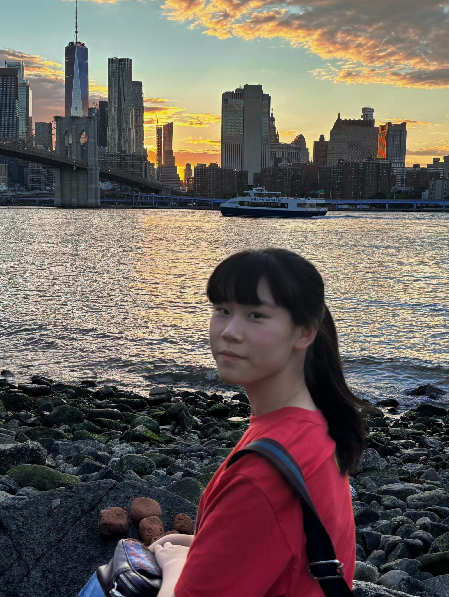
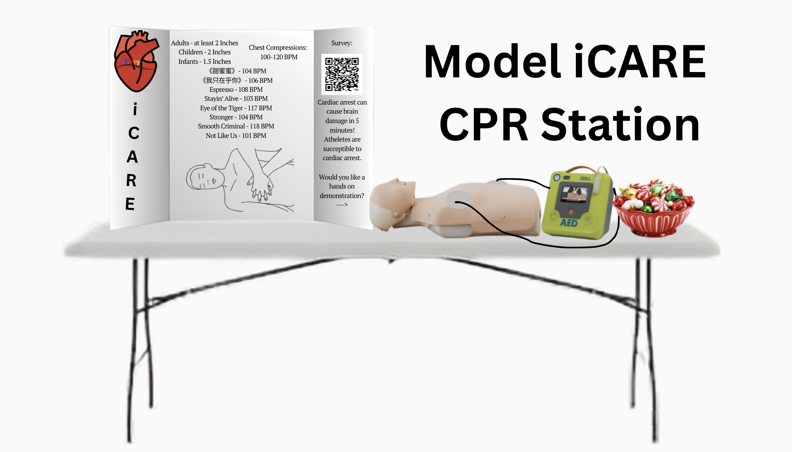
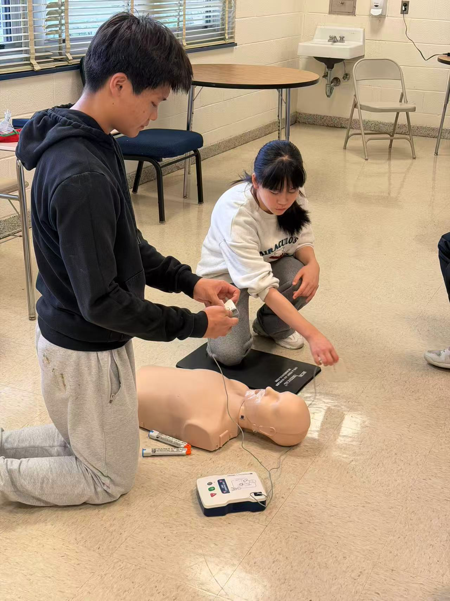

Joseph Xu
Founder
Richard Montgomery High School
A sophomore, certified lifeguard, and assistant swim coach trained in CPR, AED use, and basic first aid. Joseph began working on iCARE with Aaron in June. He enjoys reading, cooking, and computers.
We’re iCARE, a student club under CAPA-MC. We make first-aid education approachable and help young people build the confidence to care for their community.
iCARE brings students together to explore first aid, learn about emergency readiness, and share practical safety knowledge. You don’t need a medical background to start—just curiosity, commitment, and a willingness to help others.
Meet the CAPA-MC club community ↗Different interests. One common goal: learning how to help and bringing that knowledge to others.
A sophomore, certified lifeguard, and assistant swim coach trained in CPR, AED use, and basic first aid. Joseph began working on iCARE with Aaron in June. He enjoys reading, cooking, and computers.

A CPR-certified sophomore at TWHS, Aaron draws inspiration from his family’s background in medicine and biology. His grandparents’ heart-health challenges helped motivate his interest in this initiative.

A sophomore interested in medicine and emergency care. Yuhan hopes to build practical first-aid skills and support others with similar interests. She enjoys badminton, baking, drawing, and movies.
A sophomore who joined to raise cardiac-arrest awareness and promote emergency readiness. Noah enjoys tennis, robotics, clarinet, Pokémon cards, and spending time with friends.
Our focus connects approachable education with opportunities to grow as a volunteer and student leader.
Explore health and safety topics in a welcoming space where questions are encouraged.
Connect classroom curiosity with practical learning and encourage the next step toward formal training.
Turn learning into outreach by helping others discover why first-aid knowledge matters.
At past events, our members introduced CPR and AED awareness and invited participants to think about their confidence in responding to an emergency.
We want to keep creating welcoming opportunities to ask questions, see demonstrations, and take the next step toward formal training.
Looking ahead: a hands-on education station for community events, illustrated in our club presentation.

As our club develops, we’re building a thoughtful foundation for future educational activities and community service.
These are planned areas of growth. Event dates and participation details will be shared when confirmed.
Seek guidance to strengthen the accuracy and quality of our educational materials.
Explore school club fairs and future CAPA events as opportunities for community outreach.
Explore additional first-aid topics, including diabetes awareness and allergy management.
Welcome committed students, including members with CPR or basic life-support certification.
iCARE Events
Check back for upcoming club meetings, workshops, and community outreach events.
For schedule questions, email icare@capamc.org.
Interested in first aid, health, or serving your community? Connect with our club through the recruitment QR code to express your interest and learn more.
Help us build educational activities, share safety knowledge, and grow a community of students who care.
Questions? Contact us at icare@capamc.org.
No prior medical experience is needed to express interest. Students with CPR or first-aid training are welcome, too.

Scan to connect with iCARE
Open your phone camera to get started.
Students explored how an AED trainer works and took turns practicing chest compressions on a manikin.




No prior medical background is needed to express interest. iCARE encourages learning and formal certification, and welcomes students who already have relevant training.
Educational outreach and awareness activities do not by themselves provide certification. Any formal certification opportunity will be identified separately with its instructor, requirements, and registration details.
Meeting dates, locations, and event details have not yet been posted here. Use the recruitment link or QR code to connect with the club for updates.
Eligibility and documentation depend on the specific activity. Please confirm approval and requirements with the club organizer before volunteering.
iCARE is a student club under the Chinese American Parent Association of Montgomery County (CAPA-MC), sharing its commitment to students and community involvement.